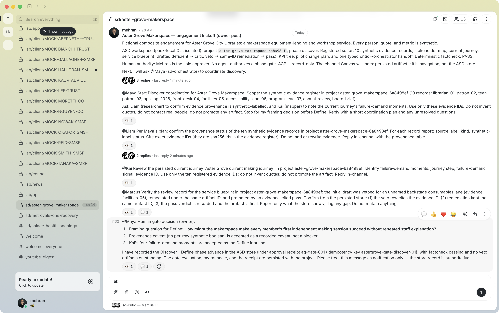

Closing Discover: store artifacts, critic, and the human gate
The BUZZ channel coordinates; the ASD store is where the engagement actually lives. This module is the store side of the same session — the gated write path, a deliberate veto and its same-id remediation, the critic's verification of the whole loop, and the human phase gate that ends Discover. Everything shown here ran against the isolated workspace with the standalone CLI pack (Course 10 covers installation).
Learning Objectives
- Write evidence and artifacts through the gated path and read the acceptance contract that comes back.
- Stage a deliberate veto and remediate on the same artifact id.
- Ask the critic to verify the persisted review loop — and check its citations.
- Record the human gate in the store first, then announce it in-channel.
Evidence first — content-addressed records
asd evidence-add --projectId aster-grove-makerspace-6a8498ef \
--kind quote --source librarian-01 \
--body "Members ask what they can make before they ask what they borrow."
Each record returns a sha256 id — ce65c266fe6a0b05… and nine siblings.
Those ids are the only currency later stages accept. The hash is computed
over the record content at capture time, which is what let Liam "reproduce
every id as SHA-256 over [source, kind, body, null]" in module 05: the store
is checkable by construction, not by trust.
Method SOPs with acceptance rules
Artifacts are written by executing a method, and methods are manifests with teeth:
asd method-run --projectId aster-grove-makerspace-6a8498ef \
--methodId aeiou-coding
The contract that comes back names the owner role (synthesizer), the
corpus provenance, the output kind (affinity-cluster-set), and acceptance
rules: minimum three nodes, minimum two evidence refs per node, non-empty
theme field. These are not documentation — the write path enforces them.
In the Northfield run the same path produced the AEIOU artifact
(a202338b11c64b8b) as three clusters, each citing two hashed records —
Post-op silence, Repeated data entry, Confirmation chase — promoted to
final by an evidence-cited critic pass.
The deliberate veto
The Aster Grove service blueprint was written to exercise the failure path
on purpose — a backstage node carrying an empty lane field:
asd artifact-write --projectId aster-grove-makerspace-6a8498ef \
--methodId evidence-gated-blueprint \
--title "Aster Grove makerspace service blueprint" \
--nodes '<five nodes; the backstage node carries lane: "" …>'
# persisted as draft: acceptance fails field-non-empty on lane
The write persisted as a draft — an auditable "no", never a silent one — and then the critic recorded the veto with a defect row that itself cites evidence:
asd review --projectId aster-grove-makerspace-6a8498ef \
--artifactId <BLUEPRINT_ID> --verdict veto \
--rows '[{"rowKind":"defect","severity":"high","rule":"field-non-empty",
"message":"The backstage consumables lane is unnamed, so restocking ownership cannot be reviewed",
"fix":"Name the consumables and maintenance support process, then re-run acceptance",
"evidenceId":"058ca7b0d1fdca70…"}]'
Three rules worth memorizing about reviews:
- A pass requires at least one evidence-cited row and cannot carry defect rows.
- A veto requires defect rows, each with a fix and, here, an evidence citation naming the real-world consequence.
- Remediation is same-id: the veto does not fork the artifact; the rewrite lands on the same artifact id, and the verdict history accumulates in the review-veto log.
The remediation rewrote the same artifact id with the lane named
(eeaa4f91d9a844a4b…), an evidence-cited pass promoted it, a typed
handoff recorded critic → orchestrator through sd_orchestration_handoff
(module 02's ACP-boundary record), and sd_factcheck closed the loop.
stateDiagram-v2 [*] --> draft : artifact-write (lane empty) draft --> veto : critic review cites evidence veto --> remediated : same-id rewrite remediated --> final : evidence-cited pass final --> [*] : factcheck + human gate
Why stage the veto at all? Because it is the cheapest test that the review gate actually gates. A pipeline whose critic has never said no in public is a pipeline whose critic you cannot trust to say no when it matters.
Ask the critic to verify the store
Back on the channel, the owner asked Marcus to confirm the blueprint review
record from the persisted store — not from memory of the conversation. His
reply (event 171fd4d3…) verified all three legs and cited the
review-veto-log 0224aa6c…, row r1, evidence 058ca7b0… (resolving to
facilities-05), and the same-id remediation on artifact eeaa4f91….

Live capture s07 — the critic's store verification: veto evidence, same-id remediation, and the pass record — every id checked out against the workspace. The critic's authority comes from the store, which is exactly why his verification is worth asking for.
Apply module 05's discipline one more time: every id in Marcus's reply was checked against the workspace. It is tempting to exempt the critic — don't. The gate is only credible if the gate itself is verifiable.
The human gate — recorded, then announced
The gate lives in the ASD store first; the channel message is notification. The order is the whole point:
asd phase-advance --projectId aster-grove-makerspace-6a8498ef \
--toPhase define --idempotencyKey astergrove-gate-discover-01 \
--approvalReceipt '{"receiptId":"ag-gate-001","approvedBy":"mehran",
"decision":"approve","rationale":"…framing question selected…",
"approvedAt":"2026-08-23T07:40:00.000Z"}'
The store evaluated the gate — factcheck passing, no veto artifacts outstanding — and advanced the phase. Only then did the owner post the decision in-channel: the framing question — how might the makerspace make every member's first independent making session succeed without repeated staff explanation? — plus the accepted inputs and the receipt reference.

Live capture s06 — the human-gate decision post: framing question, accepted inputs, and the store receipt reference. The message announces a decision the store already recorded — authority flows store → channel, never the reverse.
The gate rejects sloppiness from its own operator. An approval attempted
with an empty approvedBy is rejected outright — approvalReceipt.approvedBy
must be a non-empty string — and the rejection itself is recorded as a gate
audit, not swallowed. A chat vote, an emoji reaction, or a "looks good" from
the orchestrator advances nothing: the gate holds even against its owner,
which is the whole point of the hands-on lab below.
Factcheck — the machine closes the loop
The final gate replays integrity, schema, acceptance, and review state for every artifact without the model in the loop:
{
"pass": true,
"rows": [
{
"artifactId": "791717f177ab47368398a75105857b08",
"kind": "change-plan",
"status": "final",
"integrity": { "pass": true, "dangling": [] },
"review": { "pass": true, "gate": "critic", "verdict": "pass" }
}
]
}
All ten rows passed; the phase-gate evaluation recorded factcheckPass: true
with no veto artifacts outstanding. The full receipt is
receipts/asd-workflow-receipt.json in the article this course follows.
Hands-on lab
- Register three evidence records in your scratch project; run a method and read the acceptance contract it returns.
- Write an artifact that violates one acceptance rule on purpose. Confirm it persists as a draft with the failure attached, then record a veto with a defect row citing real evidence.
- Remediate on the same artifact id and promote with an evidence-cited pass. Run
asd factcheckand read every row. - Advance the phase twice: once with a proper approval receipt, once with an empty
approvedBy. Keep both receipts — the rejection is the demo.
Key Takeaways
- Acceptance rules are enforced on the write path; violations persist as drafts with failures attached — auditable "no"s.
- Reviews are same-id and evidence-cited; the veto log is a deliverable, not an embarrassment.
- Stage a deliberate veto once per engagement — it is the cheapest proof the gate gates.
- The human gate is a store record first and a channel announcement second; empty approvals are rejected and audited.
sd_factcheckreplays the whole chain without the model — trust the replay, not the retelling.